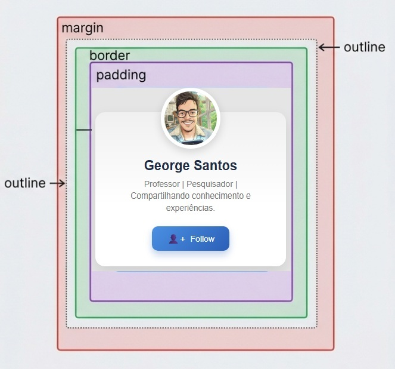
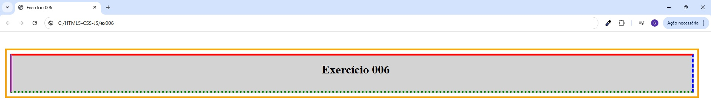

Desenvolvimento Web com HTML5, CSS3 e JavaScript
Use as setas do teclado para navegar

Tudo em HTML5 é uma caixa!

📦 Padding - Espaço Interno
padding-top: Espaço acima do conteúdo
padding-right: Espaço à direita
padding-bottom: Espaço abaixo
padding-left: Espaço à esquerda
Exemplo:
padding-top: 20px;
padding-right: 30px;
padding-bottom: 20px;
padding-left: 30px;
🌍 Margin - Espaço Externo
margin-top: Espaço acima da caixa
margin-right: Espaço à direita
margin-bottom: Espaço abaixo
margin-left: Espaço à esquerda
Exemplo:
margin-top: 30px;
margin-right: 0px;
margin-bottom: 30px;
margin-left: 0px;
🎨 Border - Borda da Caixa
border-top: Borda acima
border-right: Borda à direita
border-bottom: Borda abaixo
border-left: Borda à esquerda
Exemplo (largura | estilo | cor):
border-top: 4px solid #3498db;
border-right: 4px solid #3498db;
border-bottom: 4px solid #3498db;
border-left: 4px solid #3498db;
⭐ Outline - Linha Externa
outline-width: Espessura da linha
outline-style: Estilo (solid, dashed, dotted, etc)
outline-color: Cor da linha
outline-offset: Distância da borda
Exemplo:
outline-width: 2px;
outline-style: dashed;
outline-color: #e74c3c;
outline-offset: 5px;
Só se aprende na prática!
📝 Exercício 006
Crie um h1 com TODAS as propriedades:
- ✏️ padding-top, right, bottom, left
- ✏️ margin-top, right, bottom, left
- ✏️ border-top, right, bottom, left
- ✏️ outline-width, style, color, offset
SHORTHANDS: forma compacta para definir todas as propriedades!
Resposta
OBS: outra formas de resposta similares também são válidas

DESAFIO
Modifique o ex006: adicionando mais 4 tags "h" e faça um esquema de pirâmide, como ao lado!
Tente fazer a mesma coisa com tags "<a>", o que acontece?
⚡ Importância Semântica
Para que serve cada propriedade?
📦 Padding
Função: Cria espaço interno ao redor do conteúdo
Quando usar: Para dar "respiração" ao texto/conteúdo dentro da caixa
Exemplo: Um botão com padding oferece espaço confortável para o clique
🌍 Margin
Função: Cria espaço externo entre caixas
Quando usar: Para separar elementos na página, controlar o layout
Exemplo: Margin entre parágrafos evita que o texto fique muito junto
🎨 Border
Função: Define uma borda visível ao redor da caixa
Quando usar: Para destacar, separar visualmente ou criar contornos
Exemplo: Um card com border cria uma "moldura" visual clara
⭐ Outline
Função: Cria uma linha fora da borda (não ocupa espaço no layout)
Quando usar: Para acessibilidade - indicar foco em navegação por teclado
Exemplo: Quando você pressiona TAB em um input, o outline marca qual elemento tem foco
✨ Importante para inclusão digital!